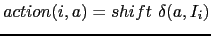
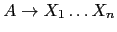
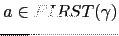
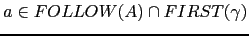

Sig: Práctica: Un C simplificado Sup: Análisis Sintáctico Ascendente en Ant: Recuperación de Errores en Con:
yapp asegurese
de seguir los siguientes consejos:
Z a una variable que representa el concepto ``lista de parámetros'',
llámela ListaDeParametros.
%token. De esta manera
el lector de su programa se dará cuenta rápidamente que dichos identificadores
no se corresponden con variables sintácticas. Por la misma razón,
si se trata de terminales
asociados con caracteres o cadenas no es tan necesario que los declare,
a menos que,
como en el ejemplo de la calculadora para '+' y '*',
sea necesario asociarles una
precedencia.
-v para producir
el fichero .output conteniendo información detallada sobre
los conflictos y el autómata. Cuando haya un conflicto shift-reduce
no resuelto busque en el fichero el estado implicado y
vea que LR(0) items

y
 entran en conflicto.
yapp
el conflicto se produce ante un terminal
yapp contabiliza un error por cada terminal
. Por esta razón,
si hay 16 elementos en
,
el analizador yapp informará de la existencia
de 16 conflictos shift-reduce,
cuando en realidad se trata de uno sólo. No desespere,
los conflictos ``auténticos'' suelen
ser menos de los que yapp anuncia.
%{ y %}. Estos delimitadores
deberán aparecer en una línea aparte. Por ejemplo:
%{
our contador = 0;
%}
%token NUM
...
%%
yydebug => 0x1F en la llamada al analizador.
yapp
pasará a rechazar una gramatica aparentemente correcta.
yapp: Cada vez que
el analizador sintáctico necesita un nuevo terminal para decidir que regla de
producción se aplica, llama al analizador léxico, el cuál deberá retornar el siguiente
terminal. La estrategia es diferente de la utilizada en el ejemplo
usado para el lenguaje Tutu en el capítulo
34. Allí generabamos en una primera fase
la lista de terminales. Aquí los terminales se generan de uno en uno
y cada vez que se encuentra uno nuevo se retorna al analizador sintáctico.
La ventaja que tiene este método es que permite colaborar al analizador sintáctico
y al analizador léxico para ``dinámicamente'' modificar la conducta
del análisis léxico. Por ejemplo en los compiladores del lenguaje C
es común hacer que el analizador léxico cuando descubre un identificador que
previamente ha sido declarado como identificador de tipo (mediante
el uso de typedef) retorne un terminal TYPENAME
diferente del terminal ID
que caracteriza a los identificadores. Para ello, el analizador
sintáctico, cuando detecta una tal declaración, ``avisa'' al analizador
léxico para que modifique su conducta. El analizador sintáctico volverá
a avisarlo cuando la declaración del identificador como
identificador de tipo salga de ámbito y pierda
su especial condición.
yapp el analizador sintáctico espera que el analizador
léxico devuelva de cada vez una pareja formada por dos escalares.
El primer escalar es la cadena que designa el terminal. A diferencia
de la habitual costumbre yacc de codificar los terminales
como enteros, en yapp se suelen codificar como cadenas.
La segunda componente de la pareja es el atributo asociado con el terminal.
Si el atributo es un atributo complejo que necesitas representar
mediante un hash o un vector, lo mejor es hacer que esta componente
sea una referencia al objeto describiendo el atributo.
El analizador léxico le indica al sintáctico la
finalización de la entrada enviándole la pareja
('',undef) formada por la palabra vacía con atributo undef.
s
(véase el ejemplo de la sección
36.1), en cuyo caso la entrada procesada
es retirada de la cadena leída.
En los no destructivos utilizamos el operador
de emparejamiento m. Véase
el ejemplo de analizador léxico en
la sección 36.13
(concretamente la subrutina scanner en la
línea 20 del fichero useinherited.pl)
yapp para producir
árboles para las expresiones en infijo. Supongamos que olvidamos
introducir una prioridad explícita al terminal '=':
$ cat -n Infixtree_conflict.yp
1 #
2 # Infixtree.yp
3 #
4
5 %{
6 use Data::Dumper;
7 %}
8 %left '-' '+'
9 %left '*' '/'
10 %left NEG
11
12 %%
13 input: #empty
14 | input line
15 ;
16
17 line: '\n' { $_[1] }
18 | exp '\n' { print Dumper($_[1]); }
19 | error '\n' { $_[0]->YYErrok }
20 ;
21
22 exp: NUM
23 | VAR { $_[1] }
24 | VAR '=' exp { bless [$_[1], $_[3]], 'ASSIGN' }
25 | exp '+' exp { bless [$_[1], $_[3] ], 'PLUS'}
26 | exp '-' exp { bless [$_[1], $_[3] ], 'MINUS'}
27 | exp '*' exp { bless [$_[1], $_[3]], 'TIMES' }
28 | exp '/' exp { bless [$_[1], $_[3]], 'DIVIDE' }
....
en este caso al compilar encontraremos conflictos:
$ yapp -v -m Infixtree Infixtree_conflict.yp 4 shift/reduce conflictsEn tal caso lo que debemos hacer es editar el fichero
.output.
El comienzo del fichero es como sigue:
$ cat -n Infixtree_conflict.output 1 Warnings: 2 --------- 3 4 shift/reduce conflicts 4 5 Conflicts: 6 ---------- 7 Conflict in state 11 between rule 13 and token '-' resolved as reduce. 8 Conflict in state 11 between rule 13 and token '*' resolved as reduce. ...Tal y como indica la expresión ...
resolved as ...,
las líneas como la 7, la 8 y siguientes se refieren a conflictos resueltos.
Mas abajo encontraremos información sobre
la causa de nuestros conflictos no resueltos:
...
26 Conflict in state 23 between rule 11 and token '/' resolved as reduce.
27 State 25 contains 4 shift/reduce conflicts
Lo que nos informa que los conflictos
ocurren en el estado 25 ante 4 terminales
distintos. Nos vamos a la parte del fichero
en la que aparece la información relativa al estado 25. Para ello,
como el fichero es grande, buscamos por la cadena adecuada.
En vi buscaríamos por /^State 25. Las líneas
correspondientes contienen:
291 State 25: 292 293 exp -> VAR '=' exp . (Rule 8) 294 exp -> exp . '+' exp (Rule 9) 295 exp -> exp . '-' exp (Rule 10) 296 exp -> exp . '*' exp (Rule 11) 297 exp -> exp . '/' exp (Rule 12) 298 299 '*' shift, and go to state 16 300 '+' shift, and go to state 13 301 '-' shift, and go to state 12 302 '/' shift, and go to state 15 303 304 '*' [reduce using rule 8 (exp)] 305 '+' [reduce using rule 8 (exp)] 306 '-' [reduce using rule 8 (exp)] 307 '/' [reduce using rule 8 (exp)] 308 $default reduce using rule 8 (exp)El comentario en la línea 308 (
$default ...)
indica que por defecto, ante cualquier
otro terminal que no sea uno de los explícitamente listados,
la acción a tomar por el analizador será reducir por la regla 8.
Una revisión a la numeración de la gramática, al comienzo
del fichero .output nos permite ver cuál
es la regla 8:
29 Rules:
30 ------
31 0: $start -> input $end
32 1: input -> /* empty */
33 2: input -> input line
34 3: line -> '\n'
35 4: line -> exp '\n'
36 5: line -> error '\n'
37 6: exp -> NUM
38 7: exp -> VAR
39 8: exp -> VAR '=' exp
40 9: exp -> exp '+' exp
41 10: exp -> exp '-' exp
42 11: exp -> exp '*' exp
43 12: exp -> exp '/' exp
44 13: exp -> '-' exp
45 14: exp -> '(' exp ')'
Efectivamente, es la regla de asignación exp -> VAR '=' exp.
El conflicto aparece por que los terminales
* + - / están en el conjunto FOLLOW(exp)
y también cabe esperarlos respectivamente
en las reglas 9, 10, 11 y 12 ya que el estado
25 contiene:
294 exp -> exp . '+' exp (Rule 9) 295 exp -> exp . '-' exp (Rule 10) 296 exp -> exp . '*' exp (Rule 11) 297 exp -> exp . '/' exp (Rule 12)
Estamos ante un caso en el que se aplica el consejo número
8.
Los items de la forma
, son los
de la forma exp -> exp . '+' exp, etc.
El item de la forma
es en este caso exp -> VAR '=' exp.
En efecto, en una expresión como a = 4 + 3 se produce
una ambiguedad. ¿Debe interpretarse como (a = 4) + 3?
¿O bien como a = (4 + 3)?. La primera interpretación
corresponde a reducir por la regla 8. La segunda a desplazar al
estado 13. En este ejemplo, el conflicto
se resuelve haciendo que tenga prioridad el desplazamiento,
dando menor prioridad al terminal = que a los
terminales * + - /.
yapp aplique
las reglas por defecto?